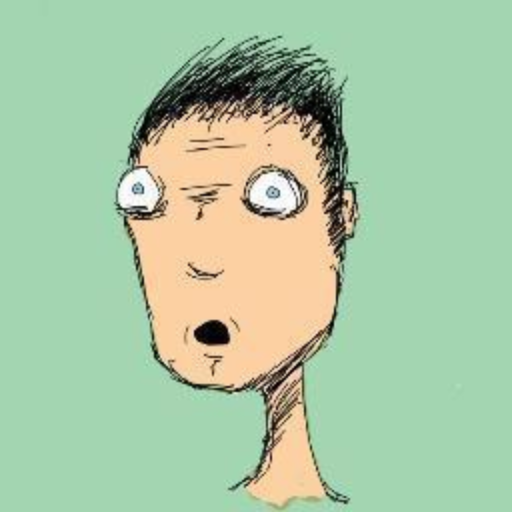

[Attention, spoilers à foison]
Près de 40 ans après Un Nouvel Espoir, Star Wars revient avec un septième épisode très attendu, Le Réveil de la Force ! J.J Abrams avait, en tant que réalisateur, une mission très difficile : donner une suite à la licence la plus aimée de la culture geek. A-t-il réussit ? C’est ce que nous allons voir dans cette critique.
Voilà une trentaine d’année que l’Empire Galactique a été vaincu. Luke Skywalker a disparu après avoir tenté de former une nouvelle académie Jedi et le Premier Ordre a été créé sur les ruines de l’Empire, mené à présent par le mystérieux Snoke. On suit les aventures de BB-8, un robot détenant la carte qui mène à Luke Skywalker. Rey, une jeune habitante de la planète Jakku et Finn, un stormtrooper déserteur, vont faire sa rencontre et se retrouver impliqués dans la lutte qui oppose le Premier Ordre à l’Alliance Rebelle, croisant au passage Han Solo, Chewbacca et Leia. Mais nos héros devront faire face à Kylo Ren, un apprenti Sith au service de Snoke et à la nouvelle arme ultime du Premier Ordre.
Oui, ce Star Wars se calque sur les mêmes briques scénaristiques que l’épisode IV. Mais ce n’est pas un problème car J.J Abrams a réussi à y intégrer assez d’originalité pour que ça devienne intéressant. Tout d’abord, on suit pour la première fois un stormtrooper en la personne de Finn. Ce personnage est vraiment intéressant, remettant totalement en question notre vision des soldats en armures blanches. Le film les humanise et nous montre enfin les limites du système fasciste qu’était l’Empire. Kylo Ren apporte également de l’originalité au scénario en nous montrant un apprenti sith tentant de ne pas succomber au côté lumineux de la force ! Mais nous reviendrons sur ce personnage un peu plus tard.
Esthétiquement parlant, ce Star Wars est magnifique. La mise en scène est très travaillée, surtout durant les batailles de vaisseaux. Quel plaisir de retrouver les X-wings et les chasseurs TIE. De plus, le choix d’utiliser plus de marionnettes et moins d’images de synthèse rapproche le film de la première trilogie et donne beaucoup de cachet au film. Certains aliens m’ont vraiment bluffé tant ils sont travaillés et cohérents. Les plans sont aussi très bien choisis et mettent en avant les éléments importants du films. J.J Abrams nous montre notamment un Premier Ordre bien plus dangereux que l’Empire. L’accent est mis sur la puissance et le fanatisme de ses troupes et de ses représentants, la scène du discours suivi par la destruction des planètes marquant le point culminant de cette folie. On peut aussi noter le rapport au grandiose dans la réalisation d’Abrams. On trouve beaucoup de plans qui mettent en opposition des personnages minuscules face au gigantisme du monde qui les entourent ou de la puissance d’autres personnages. C’est le cas de Snoke qui est présenté la première fois sous forme d’un immense personnage assis dans son trône. Je serai même déçu que ce ne soit pas vraiment le cas.
Le film a tout de même de nombreux défauts. Tout d’abord, ce sont les coïncidences et les facilités constantes qui font avancer le scénario qui m’ont dérangé. Le Faucon Millénium se situe exactement là où se trouve les héros quand ils cherchent un vaisseau. Par la suite, ils tombent sur Han Solo et Chewbacca, qui passaient par là. De plus, les héros ont vraiment beaucoup de chance (que des réussites critiques !). Rey utilise la force si facilement qu’on pourrait croire qu’elle a lu “La Force pour les nuls” dans la soute du Faucon Millénium. Je ne m’explique toujours pas comment elle peut tenter un “Tu ne vends pas de bâtons de la mort” et y arriver du premier coup. Pourquoi Anakin, Luke et Obi-Wan ont-ils pris autant de temps à maîtriser la force si c’est aussi simple ? Pourquoi créer une académie Jedi ? Idem pour Finn, se défendant relativement bien contre Kylo Ren, qui nous paraissait pourtant si fort en début de film.
Le film a tout de même de nombreux défauts. Tout d’abord, ce sont les coïncidences et les facilités constantes qui font avancer le scénario qui m’ont dérangé. Le Faucon Millénium se situe exactement là où se trouve les héros quand ils cherchent un vaisseau. Par la suite, ils tombent sur Han Solo et Chewbacca, qui passaient par là. De plus, les héros ont vraiment beaucoup de chance (que des réussites critiques !). Rey utilise la force si facilement qu’on pourrait croire qu’elle a lu “La Force pour les nuls” dans la soute du Faucon Millénium. Je ne m’explique toujours pas comment elle peut tenter un “Tu ne vends pas de bâtons de la mort” et y arriver du premier coup. Pourquoi Anakin, Luke et Obi-Wan ont-ils pris autant de temps à maîtriser la force si c’est aussi simple ? Pourquoi créer une académie Jedi ? Idem pour Finn, se défendant relativement bien contre Kylo Ren, qui nous paraissait pourtant si fort en début de film.
En parlant de Kylo Ren, il y a un vrai problème avec ce personnage. Le personnage était vraiment cool lors de ses premières apparitions : plus violent et colérique que Darth Vader, plus fanatique que tous les Siths rencontrés dans la saga. De plus, la mise en scène de ses pouvoirs le rend vraiment terrifiant. Il nous semble réellement puissant. Et soudain, il dévoile son faciès de Severus Rogue et perd toute crédibilité. Dans un Star Wars, on attends tout de même un méchant avec une bonne gueule de méchant. Là c’est pire que Hayden Christensen. Je ne remets pas en question son jeu d’acteur qui m’a paru plutôt correct, mais la “gueule” chez un méchant de SF c’est important. Durant son combat avec Rey et Finn, il perd encore plus de crédibilité, se faisant massacrer par un stormtrooper maladroit et une stagiaire Jedi. Au final, ce n’est pas grave qu’il ne soit pas si fort. On comprend qu’il est jeune et que sa formation n’est pas encore terminée. Mais pourquoi le montrer aussi puissant en première partie dans ce cas ?
Le fan service avait toute sa place dans ce nouveau Star Wars. Sans vraiment le dire, on attendait tous de retrouver des personnages, des répliques et des clins d’oeil aux anciens épisodes. Et il y en a une flopée, mais ça manque de subtilité à mon goût. Le film en fait un peu trop. Pas assez pour que ça gâche l’expérience mais assez pour que les fans le remarquent. Ce qui m’a le plus interpellé c’est la manie qu’on tous les personnages à crier “Youhou ! Je l’ai eu !” dès qu’ils réussissent à abattre un ennemi. Oui, exactement comme dans cette célèbre scène de l’épisode IV (Voir la scène). Sauf que là, ça revient si souvent que ça semble forcé.
Il y a aussi un léger problème de rythme dans le film. Tout va si vite. J’ai l’impression que les personnages n’ont pas eu un seul moment de répit dans tout le film, une scène d’action en entraînant une autre. De plus, à la fin, la rébellion découvre où se trouve Luke Skywalker (en Bretagne visiblement) et Rey part à sa rencontre. Malheureusement, le film aurait pu se passer de cette scène et nous la garder pour l’épisode 8. A la place, on a une scène assez grossière et expédiée. C’est aussi le cas de la mort de Han Solo qui est aussi rapide qu’attendue. Et c’est dommage car il manque finalement une scène culte dans ce film. Je peux vous en citer une dans chaque film : la course de pod de l’épisode I ou le face à face entre Luke et Vader dans l’épisode V. Ici, aucune scène ne ressort vraiment du lot.
Enfin, j’aimerais revenir sur une petite incohérence avec l’univers Star Wars : Snoke, le leader suprême du Premier Ordre. En effet, l’Empire Galactique était un régime fasciste qui prônait la supériorité des humains. J’ai donc été surpris de voir un non-humain à la tête de cette nouvelle faction. De plus, comme je le disais, s’il s’avérait qu’il ne soit pas réellement gigantesque, il serait beaucoup moins original et deviendrait le parfait cliché de l’alien de cinéma. Mais au-delà de ça, le personnage m’intrigue vraiment et j’attends plus d’explications sur son background dans les prochains épisodes.
Globalement, j’ai aimé le film. Ça fait plaisir de retrouver Star Wars au cinéma et J.J Abrams a réussit son pari. Le film est visuellement bluffant et on retrouve quasiment tous les éléments d’un bon Star Wars. On oublie vite les quelques défauts du film et on a vraiment envie de connaître la suite. J’avais peur de voir ce nouvel épisode et de ne pas avoir envie d’en savoir plus. Mais l’histoire est intéressante, les personnages qu’on nous propose sont sympathiques. et j’attends beaucoup de l’évolution de Kylo Ren et Snoke (Darth Plagueis ? Clone raté de Darth Sidious n°28 ? Sméagol ? Voldemort ?).
Après, ouvrons les yeux. Au delà de la nostalgie, Star Wars VII : The Force Awakens ne révolutionne pas l’art cinématographique et on a bien là un des engrenages marketing les plus coûteux de tous les temps. Alors achetez moi BB-8 pour Noël, merci.
par Niels Sarys
